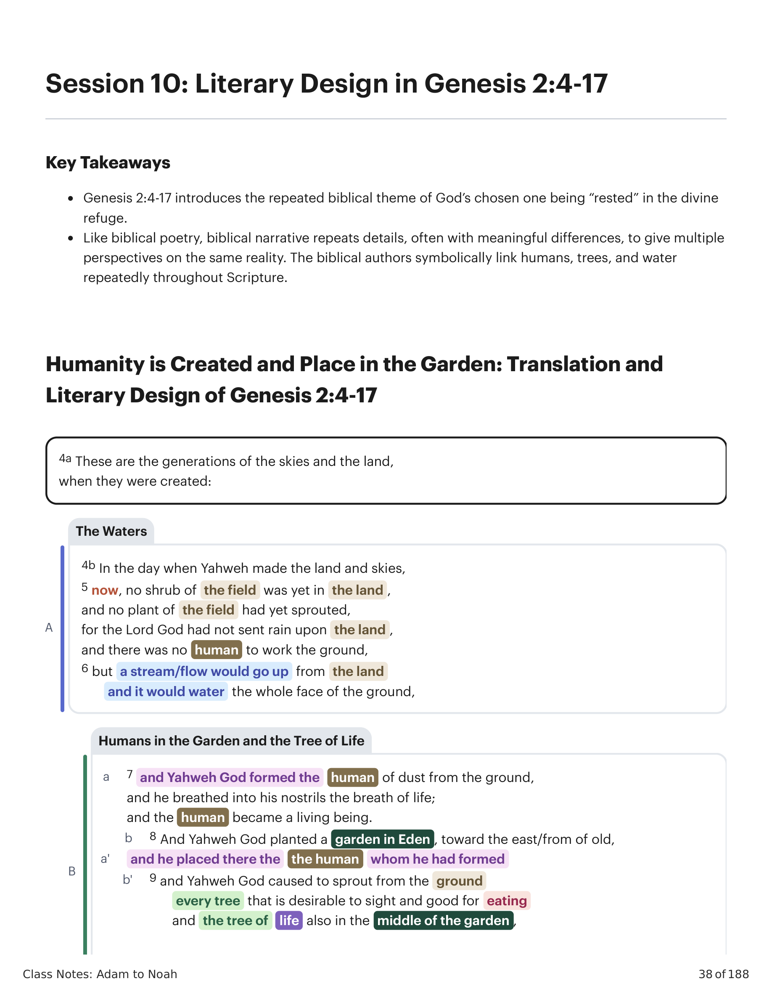
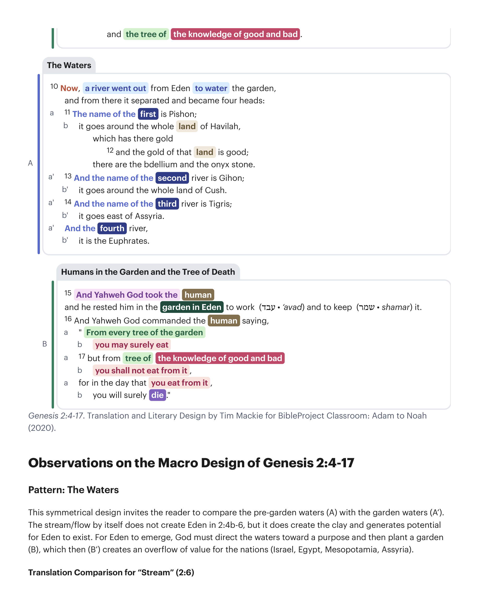
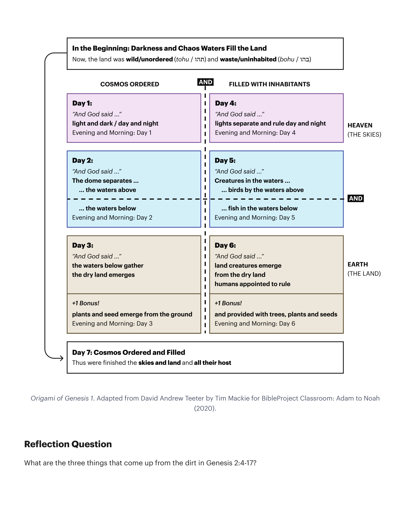

Esse design simétrico convida o leitor a comparar as águas pré-jardim (A) com as águas do jardim (A'). O fluxo/terra por si só não cria o Éden em 2:4b-6, mas cria a argila e gera o potencial para o Éden existir. Para o Éden emergir, Deus deve direcionar as águas para um propósito e então plantar um jardim (B), que então (B') cria um transbordamento de valor para as nações (Israel, Egito, Mesopotâmia, Assíria).This symmetrical design invites the reader to compare the pre-garden waters (A) with the garden waters (A'). The stream/flow by itself does not create Eden in 2:4b-6, but it does create the clay and generates potential for Eden to exist. For Eden to emerge, God must direct the waters toward a purpose and then plant a garden (B), which then (B') creates an overflow of value for the nations (Israel, Egypt, Mesopotamia, Assyria).
| VersãoVersion | TraduçãoTranslation |
|---|---|
| NVI | "Mas correntes subiram da terra e regaram toda a superfície do solo.""But streams came up from the earth and watered the whole surface of the ground." |
| ESV | "E uma neblina subia da terra e regava toda a face do solo—""And a mist was going up from the land and was watering the whole face of the ground—" |
| NAA | "Mas uma neblina costumava subir da terra e regar toda a superfície do solo.""But a mist used to rise from the earth and water the whole surface of the ground." |
| NRSV | "Mas um riacho subiria da terra, e regaria toda a face do solo—""But a stream would rise from the earth, and water the whole face of the ground—" |
| NLT | "Em vez disso, fontes subiram do solo e regaram toda a terra.""Instead, springs came up from the ground and watered all the land." |
| KJV | "Mas uma neblina subiu da terra, e regou toda a face do solo.""But there went up a mist from the earth, and watered the whole face of the ground." |
A dupla colocação (B e B') da humanidade no jardim é intencional. A primeira colocação em 2:7-9 e 2:10-14 é sobre Deus estabelecendo a humanidade em um ambiente cultivado repleto de potencial. A segunda colocação em 2:15-17 foca no teste que o jardim representa.The double placing (B and B') of humanity in the garden is intentional. The first placement in 2:7-9 and 2:10-14 is about God setting humanity in a cultivated environment which is ripe with potential. The second placement in 2:15-17 focuses on the test that the garden represents.
2:15: "E ele o cedeu/descansou" (וינחהו) aponta para a frente para a história de Noé (נח), que terá que trazer consolo (Gn 5:29 [נחם]) para a terra que é amaldiçoada por causa da loucura da humanidade no jardim, ao oferecer um sacrifício no topo da montanha sagrada. Essa comparação convida o leitor a ver como Deus está colocando esse humano no topo de uma montanha sagrada do Éden nesta história também. Também sugere para a frente a própria falha de Noé em sua vinha-jardim (Gn 9:20-24).2:15: "And he rested him" (וינחהו) points forward to the story of Noah (נח), who will have to bring comfort (Gen. 5:29 [נחם]) to the land that is cursed because of humanity's folly in the garden by offering a sacrifice on top of the sacred mountain. This comparison invites the reader to see how God is placing this human atop a sacred mountain of Eden in this story as well. It also hints forward to Noah's own failure in his garden-vineyard (Gen. 9:20-24).
2:16: O comando divino de comer de todas as árvores exceto uma estabelece a tensão do enredo do teste.2:16: The divine command to eat from all trees except for one sets up the plot tension of the test.
O uso do verbo "descansar" continua por toda a Bíblia. Josué 11:23, 23:1: Josué dá ao povo descanso na terra prometida. 2 Samuel 7:1: Davi, o representante designado de Deus, recebe descanso e é colocado no Monte Sião. 1 Reis 5:4-5: Salomão vê que há descanso na terra e decide construir o templo. Esta é uma estratégia comum usada pelos autores bíblicos — repetição intencional com pequenas diferenças. A segunda vez, eles podem usar um verbo diferente para lançar as bases de um padrão importante. Neste caso, é o padrão do escolhido de Deus sendo cedido/no descanso no refúgio divino.The use of the verb "rest" continues throughout the Bible. Joshua 11:23, 23:1: Joshua gives the people rest in the promised land. 2 Samuel 7:1: David, God's appointed representative, is given rest and placed on Mount Zion. 1 Kings 5:4-5: Solomon sees that there is rest in the land and decides to build the temple. This is a common strategy used by biblical authors—intentional repetition with small differences. The second time, they can use a different verb in order to lay the groundwork for an important pattern. In this case, it is the pattern of God's appointed one being rested in the divine refuge.
Observe que a primeira introdução das árvores em (B) enfatiza a árvore da vida, enquanto a introdução do comando divino (B') enfatiza a árvore que poderia trazer a morte.Notice that the first introduction of the trees in (B) emphasizes the tree of life, while the introduction of the divine command (B') emphasizes the tree that could bring death.
Observe a coordenação de água/humanos/plantas por suas origens comuns "da terra". Gênesis 2:5: Nenhum humano (אדם) para trabalhar a terra (אדמה). Gênesis 2:6: Uma fonte (אד) subiria da terra (מן הארץ) para regar a terra (אדמה). Gênesis 2:7: Yahweh formou (וייצר) humano (אדם) como pó da terra (מן האדמה). Gênesis 2:9: E Yahweh fez brotar (ויצמח) da terra (מן האדמה) toda árvore.Notice the coordination of water/humans/plants by their common origins "from the ground." Genesis 2:5: No human (אדם) to work the ground (אדמה). Genesis 2:6: A spring (אד) would go up from the land (מן הארץ) to water the ground (אדמה). Genesis 2:7: Yahweh formed (וייצר) human (אדם) as dust from the ground (מן האדמה). Genesis 2:9: And Yahweh sprouted (ויצמח) from the ground (מן האדמה) every tree.
A água é um dom de vida divina que torna possível dois tipos de vida derivada, e ambos dão fruto na terra. Humanos dão fruto através do que fazem, e árvores dão fruto através do que crescem. Eles são como um ao outro. Na imaginação bíblica, pessoas são como árvores, e ambas têm sua fonte de vida enraizada na água. Comparação dos Dias Três e Seis em Gênesis 1. Os dias um a três da criação são paralelos aos dias quatro a seis em Gênesis 1. Observe a comparação entre o dia três e o dia seis. No dia três, as árvores produzem fruto. No dia seis, os humanos produzem fruto.The water is a gift of divine life that makes two types of derivative life possible, and both bear fruit in the land. Humans bear fruit through what they do, and trees bear fruit through what they grow. They are like each other. In the biblical imagination, people are like trees, and both have their life source rooted in water. Comparison of Days Three and Six in Genesis 1. Days one through three of creation are parallel to days four through six in Genesis 1. Notice the comparison between day three and six. On day three, the trees produce fruit. On day six, the humans produce fruit.

Quais são as três coisas que vêm da terra em Gênesis 2:4-17?What are the three things that come up from the dirt in Genesis 2:4-17?